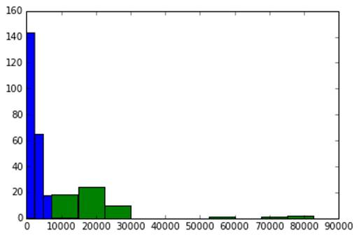
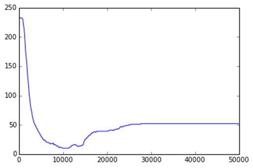

CES Data Scientist
Projet Données Multimédia
Détection de changements de scène sur une vidéo
Aliréza BANEI
Contenu
Extraction
des images à partir de la vidéo
Calcul
de l'histogramme des niveaux de gros pour chaque image
Calcul
de la distance entre deux images
Calcul
de la distance entre chaque image et l'image précédente
Préparation
des données d'apprentissage
Séparation
des distances calculées pour les données d'apprentissage :
Histogramme
de la repartition des distances pour les deux classes :
La
courbe d'erreur en fonction du seuil de la distance
Classification
par la régression logistique
Classification
par le calcul du seuil en minimisant la fonction de coût
Pour extraire les images j'ai utilisé le logiciel mplayer via la commande sous Windows 7 :
mplayer.exe -vo jpeg -forceidx -sstep 1 -vf scale -zoom -xy 320 /d/Alireza/06-11-22.avi
Cette commande a généré 1124 images à raison d'une image par seconde de vidéo et a bloqué sur la 1124ième image. J'ai essayé de le relancer plusieurs fois et ça bloquait à chaque fois sur cette image. J'ai du donc me résigner à ces 1124 images correspondant aux 1124 premières secondes (19 premières minutes) de la vidéo.
Cliquez ici pour voir les images extraites
Parcours du répertoire des images et création de la liste des fichiers :
import os
# Fonction de parcours de repertoire
def filesNamesInDirectory(directory):
for root, dirs, files in
os.walk(directory):
fileNames
= [];
for name in
files:
if name.endswith((".jpg")) :
fileNames.append(name)
return fileNames
Après avoir installé le module cv2 pour mon Python sur PC, la fonction suivante permet de calculer l'histogramme des niveaux de gris pour chaque image :
def calculHistogram(imageName):
im=cv2.imread(imageName)
hsv=cv2.cvtColor(im,cv2.COLOR_BGR2HSV)
return
cv2.calcHist([hsv],[0],None,[180],[0,180])
Calcul de la distance entre deux images selon 3 algorithmes différents (moindres carrés, somme des valeurs absolues des écarts et la log)
def calculDistance(
sign1, sign2, flag=1 ):
#verification
des dimensions
L1 = len(sign1)
L2 = len(sign2)
if
(L1 == L2 ):
#calcul de la
distance ou de la similarite
if flag==1:
d = 0;
for
i in range(L1):
d=d+ (sign1[i]-sign2[i])**2
d = np.sqrt(
d )
elif flag==2:
d = 0;
for
i in range(L1):
d=d+np.abs(sign1[i]-sign2[i])
else:
d = 0;
for
i in range(L1):
d=d+sign1[i]/sign2[i]*np.log(sign1[i]/sign2[i])
return
d
else:
return np.inf
def calculAllDistances(imagesDirectoryPath):
fileNames = filesNamesInDirectory(imagesDirectoryPath)
distances
= np.zeros(len(fileNames))
firstLoop = True
i=0
for fileName in fileNames:
filePath = imagesDirectoryPath+"/"+fileName
if
firstLoop:
h1 = calculHistogram(filePath)
firstLoop
= False
h = calculHistogram(filePath)
distances[i]=calculDistance(h1, h)
h1=h
i += 1
return distances
Toutes les fonctions ont été mise dans le fichier rendu_tp_functions.py importé dans le programme :
import rendu_tp_functions as f
Les 300 premières images ont été taguées à la main et les indices des images correspondant à la première image d'une nouvelle séquence ont été notés :
# number of tagged images
taggedImagesCount = 300
# indexes of images correspoindig to a scene
change (the first image is 1 and the last 150)
sequenceChangeIndexes = np.asarray([12, 13, 17, 19, 24, 29, 32, 35, 37, 46, 63, 68, 69, 72, 74, 80, 84, 86, 97, 105, 114, 117, 122, 137, 141, 147, 157, 160, 165, 175, 177, 180, 183, 195, 198, 201, 205, 213, 218, 226, 229, 236, 237, 243, 251, 257, 263, 268, 269, 272, 274, 279, 284, 288, 296, 298])
# converting to a zero starting list (from 0 to 149)
sequenceChangeIndexes = sequenceChangeIndexes -1
# Creating training data array with 1 for
indexes corresponding to a frame change
training_Y = np.zeros(taggedImagesCount)
training_Y[sequenceChangeIndexes]=1
distances = f.calculAllDistances(imagesDirectoryPath)
imageNames = f.filesNamesInDirectory(imagesDirectoryPath)
training_X = distances[range(taggedImagesCount)]
# Histogramme des distances pour les
deux classes de Y
plt.hist(training_X[training_Y==0])
plt.hist(training_X[training_Y==1])

On voit très bien que les deux classes (bleu pour les 0 et vert pour les 1) sont très distinctes et que le seuil de la distance se situerait vers 10000.
Pour tracer cette courbe j'ai d'abord définit les fonctions suivantes :
def lossForOne(threshold,
X, Y):
estimated_output
= [int(x>threshold) for x in X]
delta
= abs(np.subtract(estimated_output,
Y)).T
return
np.dot(delta, np.ones(X.shape))
def loss_function(thresholds,
X, Y):
return
[lossForOne(t, X, Y) for t in thresholds]
Pour calculer ensuite la perte (non précision) sur un intervalle large et en afficher la courbe :
thresholds = np.arange(0,50000,100)
losses = f.loss_function(thresholds,
training_X, training_Y)
plt.plot(thresholds, losses)

Utilisation du package sklearn pour la régression logistique.
from sklearn.linear_model
import LogisticRegression
training_X = training_X.reshape((training_X.shape[0],1))
training_Y = training_Y.reshape((training_Y.shape[0],1))
logreg = LogisticRegression()
logreg.fit(training_X, training_Y)
y_pred = logreg.predict(training_X)
y_pred = y_pred.reshape((y_pred.shape[0],1))
logreg.score(y_pred, training_Y)
r = (np.sum((training_Y==y_pred).astype(int))/float(training_Y.shape[0]))
print "Precision de la
regression logistique : %s" % (r)
# Calcul des changements de scene pour toutes les images
X = distances.reshape((distances.shape[0],1))
y = logreg.predict(X)
La précision obtenue est :
Precision de la regression logistique : 0.963333333333
Création du fichier HTML indiquant en rouge les images prédites comme correspondant à un changement de séquence. Le code de la fonction de création du fichier HTML :
# Fonction de creation
de la page html
def createHtmlForImages(outputFileName, imageNames, y_pred):
output_file
= open(outputFileName, 'w')
output_file.write('<html>\n')
output_file.write('<head>\n')
output_file.write('</head>\n')
output_file.write('<body>\n')
output_file.write('<table
border="2">\n')
i=0
for imageName in imageNames:
if
(i%5)==0:
output_file.write('<tr>\n')
output_file.write('<td
align="center"><img src="images/' + imageName +
'"/>')
if
(y_pred[i]==1):
output_file.write('<font
color="#FF0000"><b>')
output_file.write('<br/>')
output_file.write(imageName)
if
(y_pred[i]==1):
output_file.write('</b></font>')
output_file.write('</td>\n')
i +=1
if
(i%5)==0:
output_file.write('</tr>\n')
output_file.write('</table>\n')
output_file.write('</body>\n')
output_file.write('</html>\n')
output_file.close()
Appel de la fonction de création du fichier lr_output.html :
f.createHtmlForImages('lr_output.html', imageNames, y)
Le fichier généré est accessible en cliquant ici ! On y voit en rouge les images calculées par la régression logistique comme des changement de séquence.
from scipy.optimize
import minimize_scalar
training_X = np.squeeze(training_X)
training_Y = np.squeeze(training_Y)
res = minimize_scalar(f.lossForOne, 0, args=(training_X, training_Y),
bounds=(0, 50000), method='bounded')
threshold = res['x']
y_pred = (training_X>threshold).astype(int)
r = (np.sum((training_Y==y_pred).astype(int))/float(training_Y.shape[0]))
print "Precision de la
minimisation : %s" % (r)
y = (distances>threshold).astype(int)
f.createHtmlForImages('minmize_output.html', imageNames, y)
La précision ainsi obtenue est :
Precision de la minimisation : 0.966666666667
Qui est très sensiblement égale à celle de la régression logistique. L'intérêt de cette méthode est qu'on peut la valeur du seuil (distance) séparant les classes. Elle est :
In[28] : threshold
Out[28]: 9987.5084147140115
Un autre fichier HTML a été généré pour montrer en rouge les images classées comme changement de séquence par cet algorithme. Il est accessible en cliquant ici !
On a vu qu'avec les packages Python il est relativement aisé de calculer la distance entre deux images et après une phase d'apprentissage assez brève, détecter les changements de séquence avec une bonne présision.
Le code Python est disponible via les liens suivants :